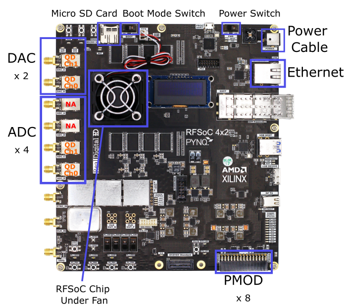
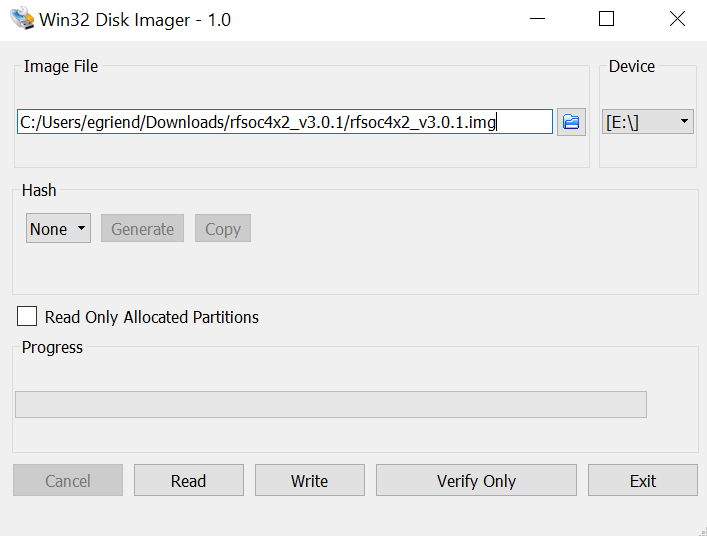

Installation
The RFSoC4x2, as shown in the image below, is a board built and sold by Real Digital using AMD’s ZYNQ Ultrascale+ Gen 3 RFSoC ZU48DR chip. While the ZU48DR has 8 DACs and ADCs, the RFSOC4x2 only uses 4x digital to analog converters (5 GSa/s) and 2x analog to digital converters (9.85 GSa/s). Nonetheless, this number of inputs and outputs is nearly perfect for NV and quantum defect control. However, as the RFSOC4x2 is sold, the ADCs have a high frequency 1GHz high-pass balun inline which is tyipcally too high frequency for our measurements and thus must be modified.

In this document we outline setup for using QICK-DAWG with RFSoC4x2. In this guide we show how to:
Setup RFSoC4x2 Hardware
a. Bipass/Remove the balun & capacitors
b. Connect the lw frequency differential amplifier
c. Connect PMOD digial outputs
d. Assembling and powering on your RFSoC4x2 board e. (Optional) Full enclosureUpload and install QICK-DAWG and other software to you RFSoC4x2 board
a. Flash your microSD card
b. Remotely connect to your RFSoC4x2 through SSH
c. Copy required files
d. Install necessary packages
1. Setup RFSoC4x2 Hardware
Prerequisites
RFSoC4x2 (with 12 volt 50 watt power supply)
Managed Router (example)
Low Frequency Differential Amplifier Texas Instruments LMH5401EVM
3 x DC Output Voltage Supply (+3.2, +0.7, -1.8V for biasing the differential amplifier)
SMA cables
Computer with Ethernet port or ethernet adaptor
Ethernet Cord(s) (at least one from RFSoC to router)
Micro SD Card Reader
Software
Win32DiskImager for Windows or Disk Manager on MacOS
Dependent Packages (follow
Installing Necessary Packagessection–included in batch file setup)
1a. Bipass/Remove the Balun & Capacitors
The signal measured by the photodiodes cannot be direcetly connected to the ADCs on the board, thus requiring modification the to the RFSoC4x2. The ADCs on the RFSoC4x2 have baluns and capacitors that act as high pass filters. When using photodiodes for photoluminesence detection, the signal is at low frequency thus the balun and capacitors on the board need to be removed or bipassed in order to get the signal into the ADC. Furthermore, as the ADCs take in a differential voltage signal, we have to add a differential amplifier which takes the signal from the photodetector in and outputs a biased signal to the ADCs for digitization (see section 1.b below).
The input electronics for one ADC channel on the RFSoC4x2 is shown in the figure below.

The combiation of the Balun, MABA-011118 and the two 100nF capactors (C302 and C303) result in a high pass filter. In order to collect the signal, we need to bypass or remove these components. Our barbaric method is to pull off the balun (under an RF shield) and desolder the capacitors as shown in the following image. The cacpacitors are then replaced with either 2x 0 ohm resistors or 2x short lenghts of wire.

1b. Connect the low frequency differential amplifier
To properly condidtion our signal for digitization, we use a Texas Instruments Texas Instruments LMH5401 EVM evaluation board. This board takes in one or two signals and outputs two voltages above (Vp) and below (Vm) a common voltage, Vcm. For full scale, the RFSoC4x2 requires an offset voltage of Vcm = 0.7V (note that this is also true for the ZCU216 evaluation board, but the ZCU111 evaluation board requires Vcm = 1.2 V). Addtionally, the differential amplifier requires two voltages for power, which are optimially set to Vcm + 2.5 = 3.2V and Vcm - 2.5 = -1.8. A labeled diagram of the LMH5401EVN is shown in the figure below.

To connect the low frequency differential amplifier to the RFSoC4x2,
solder a 3.3 V input wire to the red V+ post on the low frequency differential amplifier
solder a -1.8 V input wire to the yellow V- post on the low frequency differential amplifier
screw a 0.7 V SMA wire to the Vcm (V common) SMA head on the top of the low frequency differential amplifier
cut a semi-flexible SMA cable in half and strip the insulation off of both ends to expose the center conductor
screw the SMA heads of the cut SMA cable to Vp and Vm SMA heads on the low frequency differential amplifier–screwing on the SMA cables now will limit the torsion on our delicate soldering in the next steps
take the SMA cables attached to the low frequency differential amplifier and solder them to the RFSoC4x2
Vp should be solder to the top right solder pad
Vm should be soldered to the middle right solder pad
The image below is the circuit diagram for the RFSoC4x2. The top right solder pad–the pad for Vp–is labeled 6. The middle right solder pad–the pad for Vm–is labeled 5

Note that you can instead leave the balun in place and directly solder coax cables to the capacitor terminals, however, this is more difficult and it is easy to destroy the capacitor terminals with the solder iron.
1c. Connect PMOD digial outputs
To control the laser through TTL you must connect your laser to the PMOD located on the corner of the board. To connect, we cut the female head off a PMOD cable and soldered on a female BNC head instead. PMOD A 1-8 are enabled for QICK-DAWG–in the demo we use PMOD 1. The image below provides a schematic of the PMOD on the RFSoC4x2.

1d. Assembling and powering on your RFSoC4x2 board
With the hardware modified and differential amplifier connected, the RFSoC4x2 can be assembled to be connected to your computer. This connection is made through a managed ethernet router and by using the Pyro4 python package.
Slide your micro SD card into its slot on the RFSoC4x2 board. Check that the BOOT switch is on SD mode.
Connect an Ethernet cable from the board to the router and connect an Ethernet cable from the router to your computer.
Connect the router and board to their respective power supplies. Be sure to use the 12 volt 50 watt power supply for the RFSoC4x2 board not the router.
Flip the power switch on the RFSoC4x2 on. You should hear the fan above the RFSoC chip begin to whir and you should see green LED lights blinking all over the board. After about 30 seconds the boot light should turn green and the LED screen will display the board’s IP address.
Your setup should resemble the schematic below.

1e. (Optional) Full enclosure
In our lab, we have assembled all the necessary components into a custom rack box with screw holes and 3D printed cages for fastening components down. We modified Bud Industries CH-14404 Enclosure. The following files are found in qickdawg/installation/enclosure
Enclosure_Front.SLDPRT, CAD for custom enclsoure front panel holes for SMA and BNC pass through
Enclosure_Main.SLDPRT, CAD for custom enclosure drill holes to secure components
Low_Freq_Diff_Amp_Base.SLDRT, CAD for 3D printable differential amplifier support for mounting the differential amplifier near the RFSoC 4x2 board
Low-Freq_Diff_Amp_Top.SLDPRT, CAD for 3D printable differential amplifier top
Router_Holder.SLDPRT, CAD for 3D printable router cage for holding the router in the enclsoure

2. Install QICK-DAWG and other software to you RFSoC4x2 board
(Getting started directions adapted from QICK ZCU111 quick-start-guide)
2a. Flashing your Micro SD Card
First, you will need to flash the micro SD card with the RFSoC4x2 PYNQ image found here. Download the RFSoC4x2 PYNQ image and unzip the file if it is a .zip file.
(Windows)
With your micro SD card plugged in to your computer, open Win32DiskImager. Select the PYNQ file as your image file and select your micro SD card as the device. Double check you are not flashing the image file to the wrong drive (not your computer hard drive)! To execute, click
Write.

2b. Remotely connect to your RFSoC4x2
To connect to your RFSoC4x2, you first need to find the IP address assigned to your board. Conveniently, the RFSoC4x2 has an LED screen on the top of the board that displays the IP address. Alternatively, you can log into your router and find the IP address and/or assign a static IP address.
Copying Necessary Files to the RFSoC4x2
We have written our own .bat file and jupyter notebook to streamline the installation process. The first step is to run the .bat file which copies all of the required files to the RFSoC4x2
Clone qickdawg to your computer
Open the command prompt
Navigate to the folder that contains the QICKDAWG file
FPGA_SETUP.batIn the command prompt type
FPGA_SETUP.batand hit enterWhen prompted enter the IP address of your FPGA and password–
xilinx
FPGA_SETUP.bat copies the following files to your RFSoC4x2:
qick
Serpent and Pyro4 packages
run_server and qick_daemon Jupyter Notebook files
qickdawg speicific firmware
Connecting to the Jupyter Server
With the required files copied to your RFSoC4x2, we will now install the required packages by running an .ipynb though the RFSoC4x2’s Jupyter Notebook server. To connect to the jupyter notebook server:
In a browser window type your RFSoC4x2 IP address as shown on the board’s LED screen and use password
xilinxas shown in the graphic below

From the home page, navigate to the installation folder, open Installation_Packages.ipynb and run all of the cells in install the packages. This should install qick, serpent, and pyro4 to your python environtment, which sholud be sufficient to run a pyro server and remotely connect to your RFSoC4x2
Run the pyro server to remotely connect to QICK and the RFSoC4x2
With all of hte packages installed, you can now run your pyro server to connect to an instance of qick. This is accomplished by running two jupyter notebooks.
First we run
run_server/name_server.ipynbwhich starts a pyro4 server. In this notebook, you need to change the ip address to the ip address to the board.

Second, we run the
run_server/qick_daemon.ipynbnotebook, which uploads firmware to the RFSoC4x2 and creates a python socket to communicat with the board. This notebook has a string which contains the path to our alternative firmware and has ans_hostvariable which needs to be assigned to the ip address of your RFSoC4x2 board.

With these two notebooks running you can now start communicating with your RFSoC4x2 from a python kernel on your main computer. From here, we recommend running through qickdawg/jupyter_notebooks/NVDemo_RFSoC4x2.ipynb which contains significant documentation on how to run our basic NV characterization notebooks.